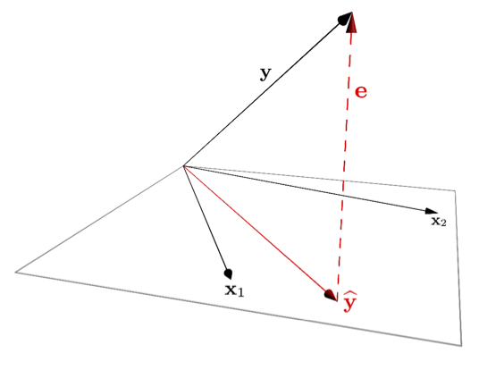

Biology 723: Statistical Computing for Biologists
Paul M. Magwene
2018-01-25
Chapter 1 Introduction

Bio 723 (formerly Bio 313) is a course I offer at Duke University. The focus of this course is statistical computing for the biological sciences with an emphasis on common multivariate statistical methods and techniques for exploratory data analysis. A major goal of the course is to help graduate students in the biological sciences develop practical insights into methods that they are likely to encounter in their own research, and the potential advantages and pitfalls that come with their use.
In terms of mathematical perspectives, the course emphasize a geometric approach to understanding multivariate statistics. I try to help students develop an intuition for the geometry of vector spaces and discuss topics like correlation, regression, and principal components analysis in terms of angles between vectors, dot products, and projection.
1.1 How to use these lecture notes
In this and future materials to be posted on the course website you’ll encounter blocks of R code. Your natural intuition will be to cut and paste commands or code blocks into the R interpretter to save yourself the typing. DO NOT DO THIS!!
In each of the examples below, I provide example input, but I don’t show you the output. It’s your job to type in these examples at the R console, evaluate what you typed, and to look at and think critically about the output. You will make mistakes and generate errors! Part of learning any new skill is making mistakes, figuring out where you went wrong, and correcting those mistakes. In the process of fixing those errors, you’ll learn more about how R works, and how to avoid such errors, or correct bugs in your own code in the future. If you cut and paste the examples into the R interpretter the code will run, but you will learn less than if you input the code yourself and you’ll be less capable of apply the concepts in new situations.
The R interpretter, like all programming languages, is very exacting. A mispelled variable or function name, a stray period, or an unbalanced parenthesis will raise an error and finding the sources of such errors can sometimes be tedious and frustrating. Persist! If you read your code critically, think about what your doing, and seek help when needed (teaching team, R help, Google, etc) you’ll eventually get better at debugging your code. But keep in mind that like most new skills, learning to write and debug your code efficiently takes time and experience.